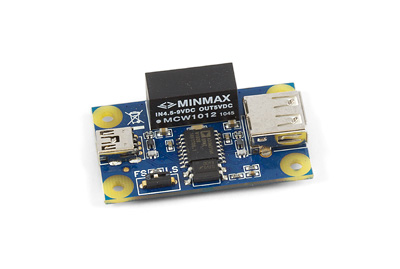
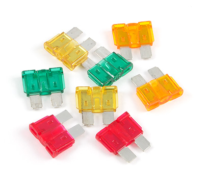
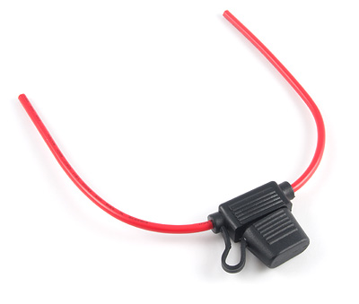

USB Isolator

Product Features
A USB isolator to protect your computer from overvoltage. Also useful in removing ground “voltage” differences between devices.
The USB Isolator is designed to protect your PC from harmful voltage that can flow from devices attached to your PC through the USB cable. The isolator is inserted between the Phidgets board and your PC.
Product Description
The USB Isolator can also be used to eliminate problems caused by ground “voltage” differences between USB Host and USB devices. The USB Isolator can be very useful for stabilizing systems. Have a look at the technical information section of the User Guide.
Fuses - 5/10/20/30A 32V

Product Features
Fast acting automotive fuses. Assorted amperages.
Product Description
You can use these fuses to protect your system if you have high current power supplies or batteries. When semiconductors fail, they often become a short circuit, and will glow white-hot if the power supply is powerful enough. A properly sized fuse can interrupt the flow, preventing possible fire or damage to other components in the system.
If your system is using a good quality power supply like our 3022-3025 supplies, the power supply will limit the current at it's maximum, (2 Amps in this case) and a fuse is usually not necessary.
If your source of power is very high current, for example a 12 Volt / 10 Amp power supply, and a component fails, up to 120 watts of power can be concentrated on it. Many batteries can deliver hundreds, or even thousands of amps, and fuses are strongly recommended.
A good practice is to put one large fuse at the output of the power source, and smaller fuses at each device. The fuses current ratings should be choosen to be slightly higher than the maximum current the device is expected to draw.
Fuse Holder

Product Features
This fuse socket provides a quick and easy way to add an automotive fuse to your system.
Product Description
The in-line Fuse Holder holds one Automotive Fast-Action Fuse and is rated for currents of 30A or less.
We Provide:
- To be accessible, friendly, and helpful at all times.
- To answer the phone when you call, 24/7/365.
- Reply to your emails and support tickets within 24 hours.
- To provide timely information about new hardware.
- To provide all design documentations.
Please fulfill following request form to get more information!